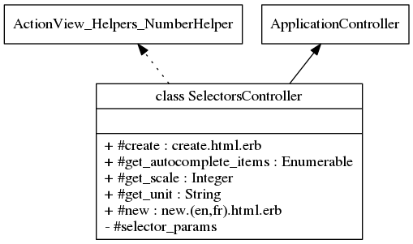

Class: SelectorsController
- Inherits:
-
ApplicationController
- Object
- ActionController::Base
- ApplicationController
- SelectorsController
- Includes:
- ActionView::Helpers::NumberHelper
- Defined in:
- app/controllers/selectors_controller.rb
Overview
In charge of statistics data retrieval, analysis and rendering.
Data
are retrieved from the WorldBank database.
Statistics are computed by R
library through Rserve. Data are send for rendering with gon gem for
javascript. Chart is rendered with Rgraph. This controller support full
localization (routes, fields and data).
Corresponding integration tests for users:
Corresponding integration tests for anonymous:

Instance Method Summary collapse
-
#create ⇒ create.html.erb
Fetch data, compute and prepare for rendering.
-
#get_autocomplete_items(parameters) ⇒ Hash
We override the standard method to implement filtering.
-
#get_scale(l, percent) ⇒ Integer
compute scale for the graph.
-
#get_unit(l) ⇒ String
Translate to unit in english and french.
-
#new ⇒ new.(en,fr).html.erb
Asks for indicators and countries for statistics.
-
#selector_params ⇒ Object
private
Use callbacks to share common setup or constraints between actions.
Methods inherited from ApplicationController
#configure_permitted_parameters, #default_url_options, #set_locale
Instance Method Details
#create ⇒ create.html.erb
Fetch data, compute and prepare for rendering. This is not a restful create. The user can loop on create to change its statistics.
45 46 47 48 49 50 51 52 53 54 55 56 57 58 59 60 61 62 63 64 65 66 67 68 69 70 71 72 73 74 75 76 77 78 79 80 81 82 83 84 85 86 87 88 89 90 91 92 93 94 95 96 97 98 99 100 101 102 103 104 105 106 107 108 109 110 111 112 113 114 115 116 117 118 119 120 121 122 123 124 125 126 127 128 129 130 131 132 133 134 135 136 137 138 139 140 141 142 143 144 145 146 147 148 149 150 151 152 153 154 155 156 157 158 159 160 161 162 163 164 165 166 167 168 169 170 171 172 173 174 175 176 177 178 179 180 181 182 183 184 185 186 187 188 189 190 191 192 193 194 195 196 197 198 199 200 201 202 203 204 205 206 207 208 209 210 211 212 213 214 215 216 217 218 219 220 221 222 223 224 225 |
# File 'app/controllers/selectors_controller.rb', line 45 def create begin # find indicators and countries from table @indicator_base = Indicator.accessible_by(current_ability).where(language: I18n.locale).order(:topic, :id1).all @country_base = Country.accessible_by(current_ability).where(language: I18n.locale).order(:type, :name).all @selector = Selector.new(selector_params) @indicator = params[:fake_indicator] @percent = @indicator[@indicator.length - 3, @indicator.length] == '.ZS' ? true : false @i1 = Indicator.accessible_by(current_ability).where(id1: @indicator, language: I18n.locale).take @c1 = Country.accessible_by(current_ability).where(name: params[:fake_country1], language: I18n.locale).take # check if we compare countries or indicators @indicator_switch = params[:selector][:form_switch] == 'indicator' ? true : false if @indicator_switch @indicator2 = params[:fake_indicator2] @percent2 = @indicator2[@indicator2.length - 3, @indicator2.length] == '.ZS' ? true : false @i2 = Indicator.accessible_by(current_ability).where(id1: @indicator2, language: I18n.locale).take else @c2 = Country.accessible_by(current_ability).where(name: params[:fake_country2], language: I18n.locale).take @percent2 = @percent end unless @i1.present? # need to check if the indicator is not hacked @indicator = '' end unless @i2.present? # need to check if the indicator is not hacked @indicator2 = '' end if @c1.present? # need to check if the country is not hacked @country1 = @c1.iso2code @country1_name = @c1.name end if @c2.present? # need to check if the country is not hacked @country2 = @c2.iso2code @country2_name = @c2.name end rescue ActiveRecord::RecordNotFound flash[:notice] = t('wrong_parameter') redirect_to new_selector_path(locale: I18n.locale) return end begin # get worldbank data @period = params[:selector][:year_begin].to_s + ':' + params[:selector][:year_end].to_s # format period for WorldBank @results1 = WorldBank::Data.country(@country1).indicator(@indicator).dates(@period).fetch # bug .language('fr') @results2 = @indicator_switch ? WorldBank::Data.country(@country1).indicator(@indicator2).dates(@period).fetch : WorldBank::Data.country(@country2).indicator(@indicator).dates(@period).fetch rescue StandardError flash[:notice] = t('wrong_worldbank_fetch') redirect_to new_selector_path return end v1 = [] v2 = [] y = [] y_to_i = [] for d in 0..(@results1.size - 1) # percentage handling f for percentage else integer v1[d] = @results1[(@results1.size - 1) - d].value.to_f if @percent v2[d] = @results2[(@results1.size - 1) - d].value.to_f if @percent2 || (!@indicator_switch && @percent) v1[d] = @results1[(@results1.size - 1) - d].value.to_i unless @percent v2[d] = @results2[(@results1.size - 1) - d].value.to_i if !@percent2 || (!@indicator_switch && !@percent) y[d] = @results1[(@results1.size - 1) - d].date y_to_i[d] = y[d].to_i # R needs integers for correct calculus end l = [v1.max.to_s.length, v1.max.to_s.length].max # l contains the length of the biggest integer l2 = [v2.max.to_s.length, v2.max.to_s.length].max @scale = get_scale(l, @percent) # compute the dividing scale for first serie @unit = get_unit(l) # compute the unit if @indicator_switch && l != l2 @scale2 = get_scale(l2, @percent2) @unit2 = get_unit(l2) @same_scale = false @scale_change = @scale.to_s.length - @scale2.to_s.length else @same_scale = true @scale_change = 0 @power_scale_change = 1 end v1.collect! { |i| i / @scale } # apply the scale if @same_scale v2.collect! { |i| i / @scale } @ylabels = true else v2.collect! { |i| i / @scale2 } @ylabels = false end v = [v1, v2] # rescale v2 to display correct graph value l1b = @percent ? 2 : [v1.max.to_s.length, v1.max.to_s.length].max # l contains the length of the biggest integer or 2 for percentage l2b = @percent2 ? 2 : [v2.max.to_s.length, v2.max.to_s.length].max @power_scale_change = @indicator_switch ? (10**(l1b - l2b)).to_f : 1 l1b = [v1.max.to_s.length, v1.max.to_s.length].max # l contains the length of the biggest integer l2b = [v2.max.to_s.length, v2.max.to_s.length].max v2_rescaled = v2.collect { |i| (i * @power_scale_change).to_i } v = [v1, v2_rescaled] @precision = @percent ? 2 : 0 if I18n.locale == :en # set number format for Rgraph @scale_thousand = ',' @scale_point = '.' @language = 'en' else @scale_thousand = ' ' @scale_point = ',' @language = 'fr' end # X axis positioning @xaxispos = 'bottom' @xaxispos = 'center' if v1.min < 0 || v2.min < 0 if @indicator_switch && @xaxispos == 'center' # set min value @min1 = v1.min < 0 ? v1.min : 0 @min2 = v2.min < 0 ? v2.min : 0 else @min1 = 0 @min2 = 0 end # title scaffolding @title_scale_unit = ' ' if @same_scale # only show scale on title if same scale @percent ? @title_scale_unit = ' - ' << t('with_percent') : @title_scale_unit = ' - ' << t('with_scale') << ': 1/' << number_with_delimiter(@scale, locale: I18n.locale) \ << ' - ' << t('with_unit') << ': ' << @unit else @title_first_axis = @percent ? t('with_percent') : t('with_scale') << ': 1/' << number_with_delimiter(@scale, locale: I18n.locale)\ << ' - ' << t('with_unit') << ': ' << @unit @title_second_axis = @percent2 ? t('with_percent') : t('with_scale') << ': 1/' << number_with_delimiter(@scale2, locale: I18n.locale)\ << ' - ' << t('with_unit') << ': ' << @unit2 end if @indicator_switch gon.indicator2 = @i2.name gon.country2 = '' @title = t('compare') << ': ' << @i1.name << ' / ' << @i2.name \ << ' - ' << t('country') << ': ' << @c1.name \ << @title_scale_unit else gon.indicator2 = '' gon.country2 = @c2.name @title = t('compare') << ': ' << @c1.name << ' / ' << @c2.name \ << ' - ' << t('indicator') << ': ' << @i1.name \ << @title_scale_unit end @current_user_email = user_signed_in? ? current_user.email : 'no_user' # set email for google analytics # send data in js format gon.push( title: @title, language: @language, data: v, data1: v1, data2: v2, year: y, numxticks: y.length - 1, indicator: @i1.name, country1: @c1.name, scale: @scale, xaxispos: @xaxispos, ylabels: @ylabels, power_scale_change: @power_scale_change, scale_thousand: @scale_thousand, scale_point: @scale_point, title_first_axis: @title_first_axis, title_second_axis: @title_second_axis, min1: @min1, min2: @min2 ) # __________Statistics______________ begin c = Rserve::Connection.new c.assign('year', y_to_i) c.assign('vect1', v1) c.assign('vect2', v2) @mean1 = c.eval('mean(vect1)') @mean2 = c.eval('mean(vect2)') @cor = c.eval('cor(vect1,vect2)') @coeflm1 = c.eval('coefficients(lm(vect1 ~ year))').as_floats @coeflm2 = c.eval('coefficients(lm(vect2 ~ year))').as_floats @coeflm3_1 = c.eval('summary(lm(vect1 ~ year))$r.squared ') @coeflm3_2 = c.eval('summary(lm(vect2 ~ year))$r.squared ') @meanrate1 = (@coeflm1[1] / @mean1.to_ruby) * 100 @meanrate2 = (@coeflm2[1] / @mean2.to_ruby) * 100 rescue StandardError flash[:notice] = t('rserve_problem') redirect_to new_selector_path return end end |
#get_autocomplete_items(parameters) ⇒ Hash
We override the standard method to implement filtering.
indicator and
country input field are autocompleted and filtered by ability and language
23 24 25 26 27 28 |
# File 'app/controllers/selectors_controller.rb', line 23 def get_autocomplete_items(parameters) items = active_record_get_autocomplete_items(parameters) if parameters[:model] == Indicator || parameters[:model] == Country items = items.accessible_by(current_ability).where(language: I18n.locale) end end |
#get_scale(l, percent) ⇒ Integer
compute scale for the graph
231 232 233 234 235 236 237 238 239 240 |
# File 'app/controllers/selectors_controller.rb', line 231 def get_scale(l, percent) scale = case l when 1..6 then 1 when 7..9 then 1000 when 10..12 then 1_000_000 else 1_000_000_000 end scale = 1 if percent # rectify scale for percentage return scale end |
#get_unit(l) ⇒ String
Translate to unit in english and french
245 246 247 248 249 250 251 252 |
# File 'app/controllers/selectors_controller.rb', line 245 def get_unit(l) unit = case l when 1..6 then 'unit' when 7..9 then t('thousand') when 10..12 then t('million') else t('billion') end end |
#new ⇒ new.(en,fr).html.erb
Asks for indicators and countries for statistics
34 35 36 37 38 39 |
# File 'app/controllers/selectors_controller.rb', line 34 def new @indicator_base = Indicator.accessible_by(current_ability).where(language: I18n.locale).order(:topic, :id1).all @country_base = Country.accessible_by(current_ability).where(language: I18n.locale).order(:type, :name).all @selector = Selector.new @language = I18n.locale.to_s end |
#selector_params ⇒ Object (private)
Use callbacks to share common setup or constraints between actions. Never trust parameters from the scary internet, only allow the white list through.
258 259 260 |
# File 'app/controllers/selectors_controller.rb', line 258 def selector_params params.require(:selector).permit(:form_switch, :indicator, :indicator2, :country1, :country2, :year_begin, :year_end) end |